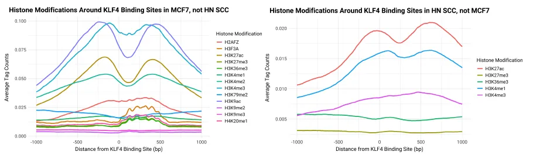
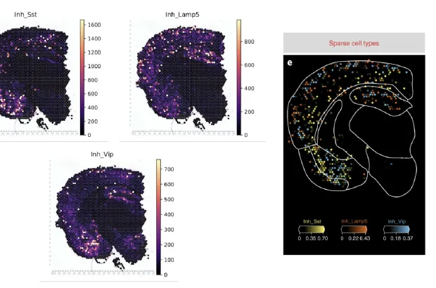
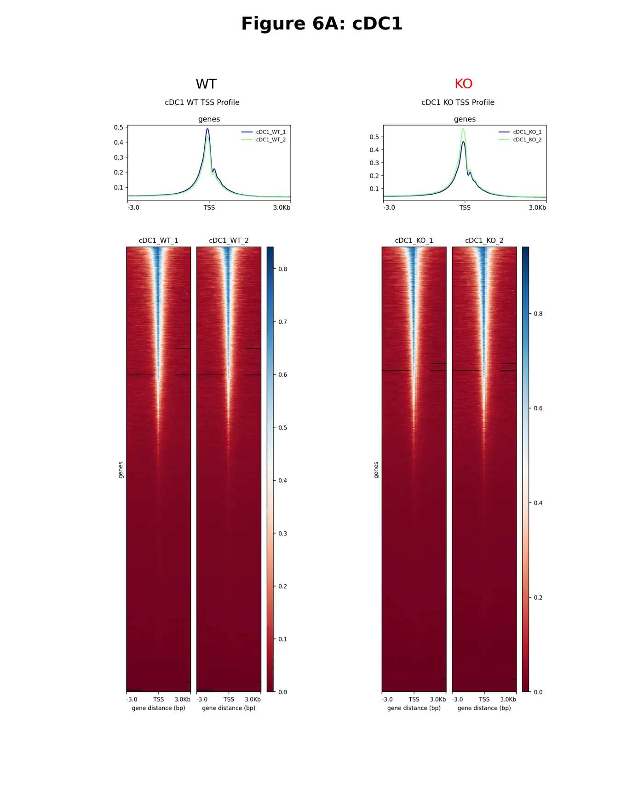

Bioinformatics · Computational biology
Bioinformatician building reproducible NGS pipelines and structure-prediction workflows for drug discovery.
M.Sc. in Bioinformatics from Boston University, 2026. I work across sequencing analysis, machine learning and AlphaFold3 structure prediction, and I like analyses that someone else can rerun.
Open to full-time bioinformatics and computational biology roles in the US: Boston, New York City or California, in person, hybrid or remote.
How I work
What you get besides the code
Translation
I like getting a complex analysis across to people who do not live in code. At AB Biosciences my supervisor taught me to state the question, show the data, then give the conclusion. By the end of the summer I was teaching him the AlphaFold3 workflow.
Immersion
I keep a running movie in my head of what is happening biologically at each step. It is how I catch a pipeline that finishes successfully and is quietly wrong, like a filter that dropped most of a genome's reads.
Community
I directed UB Hacking, an 800+ participant hackathon. As Master's Student Advisory Chair of BU's Bioinformatics Organized Students I formed a committee of 7, presented to faculty, and our work led to real program changes and a guide for future students. I have also been a cell biology TA and a first-gen mentor.
Industry and research
The work I would start with

Computational Biology Intern, Protein Engineering Group, AB Biosciences
Triaging AlphaFold3 Predictions for Therapeutic Fc-Fusion Proteins
I built a four-step triage framework that ranks AlphaFold3 predictions of trimerized Fc-fusion designs, so protein engineers can pick candidates before booking bench time.
Read the case study →
Computational Biology Researcher, Jacobs School of Medicine, University at Buffalo (mentor: Dr. Michael Buck)
Predicting Where the Pioneer Factor KLF4 Binds, and Why
A machine-learning study of what separates KLF4 binding in one cell type from another, built on a compendium of public ChIP-seq data.
Read the case study →
Genomics Research Assistant, Krabbenhoft Lab, University at Buffalo
Reassembling the Razorback Sucker Genome with Newer Long-Read Tools
Does a newer toolchain build a better genome from the same old sequencing data? I rebuilt the endangered razorback sucker genome to find out.
Read the case study →Pipelines and reproductions
From raw reads to figures

Team project (3 people), DS 596 at Boston University
Cell2location: Spatial Mapping of Cell Types
Reproduction and extension of cell2location (Kleshchevnikov et al., 2022, Nature Biotechnology) on mouse brain Visium, human glioblastoma Visium and Xenium.
Read the case study →
Course project
RNA-seq: TYK2 in Pancreatic β-Cell Development
Reproduction of Chandra et al. 2022 (Nature Communications): how TYK2 knockout changes gene expression at the S5 endocrine progenitor stage.
Read the case study →
Course project
ChIP-seq: RUNX1 Binding in MCF-7 Breast Cancer Cells
A Nextflow re-analysis of Barutcu et al. 2016 that maps RUNX1 binding genome-wide and ties it to gene expression after RUNX1 knockdown.
Read the case study →
Course project
ATAC-seq: Chromatin Accessibility in Dendritic Cells
A Nextflow reproduction of the HDAC1 dendritic-cell study (De Sá Fernandes et al., 2024, Cell Reports), from raw SRA reads to differentially accessible regions and motifs.
Read the case study →
Course project (BF528)
Bacterial Genome Assembly Pipeline
A Nextflow pipeline that assembles and evaluates a complete Alteromonas macleodii genome from long and short reads.
Read the case study →Skills
Tools I use
Languages and tools
Python, R, UNIX/Linux, Bash, C++, Java, Git/GitHub, Docker, Singularity, LaTeX
Sequencing and omics
Bulk RNA-seq, scRNA-seq, ChIP-seq, functional genomics, multi-omics integration, epigenetics, proteomics, genome assembly
Bioinformatics tools
R/Bioconductor, Seurat, Scanpy, DESeq2, edgeR, STAR, HISAT2, BWA, Bowtie, FastQC, MACS2, HOMER, AlphaFold3, ChimeraX
Workflows and compute
Nextflow, Snakemake, SLURM, LSF, HPC cluster management
Machine learning and statistics
PyTorch, TensorFlow, scikit-learn, SVM, probabilistic graphical modeling, statistical analysis
Contact
Hiring for a bioinformatics or computational biology role?
Open to full-time bioinformatics and computational biology roles in the US: Boston, New York City or California, in person, hybrid or remote. Email is the fastest way to reach me.